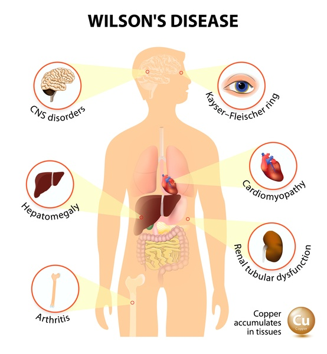

Wilson’s disease

SYMPTOMS:
Wilson's disease is present at birth, but signs and symptoms don't appear until the copper builds up in the brain, liver or other organ. Signs and symptoms vary depending on the parts of your body affected by the disease. They can include:
- Fatigue, lack of appetite or abdominal pain
A yellowing of the skin and the whites of the eye (jaundice)
-
Golden-brown eye discoloration (Kayser-Fleischer rings)
Fluid buildup in the legs or abdomen
-
Problems with speech, swallowing or physical coordination
-
Uncontrolled movements or muscle stiffness
CAUSES
- Wilson's disease is inherited as an autosomal recessive trait, which means that to develop the disease you must inherit one copy of the defective gene from each parent. If you receive only one abnormal gene, you won't become ill yourself, but you're a carrier and can pass the gene to your children.
DIAGNOSIS:
- Blood and urine tests. Blood tests can monitor your liver function and check the level of a protein that binds copper in the blood (ceruloplasmin) and the level of copper in your blood. Your doctor also might want to measure the amount of copper excreted in your urine during a 24-hour period.
-
Eye exam. Using a microscope with a high-intensity light source (slit lamp), an ophthalmologist checks your eyes for Kayser-Fleischer rings, which is caused by excess copper in the eyes. Wilson's disease also is associated with a type of cataract, called a sunflower cataract, that can be seen on an eye exam.
-
Removing a sample of liver tissue for testing (biopsy). Your doctor inserts a thin needle through your skin, into your liver and draws a small sample of tissue. A laboratory tests the tissue for excess copper.
-
Genetic testing. A blood test can identify the genetic mutations that cause Wilson's disease. Knowing the mutations in your family allows doctors to screen siblings and begin treatment before symptoms arise.
TREATMENT
- If you take medications for Wilson's disease, treatment is lifelong.